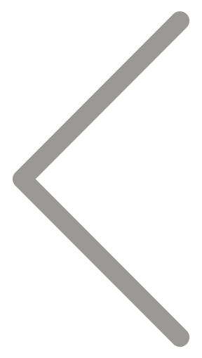
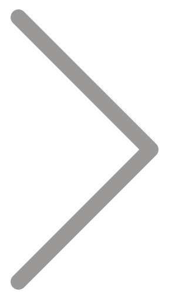

<ion-header>

    <ion-toolbar class="line1 bg-gray">
        <div slot="start" class="contagem">
            <span class="counter">0</span>
            
        </div>
        <div class="btns-top">
            <a class="btn-calendario active" size="small">Calendário</a>
            <a href="./tarefas" class="btn-tarefas" size="small">Tarefas</a>
        </div>
        <div slot="end" class="data">
            <div class="dia-semana">{{today | date:'EEEE'}}</div>
            <div class="dia-mes">{{today | date:'dd/MM/yyyy'}}</div>
        </div>
    </ion-toolbar>

    <ion-toolbar class="line2 bg-gradient">
        
        <ion-title class="txt-c">
            <h2>{{today | date:'MMMM'}}</h2>
            <h1>{{weekNumber}}° Semana</h1>
            <h3>{{startWeek | date:'dd/MM/yy'}} - {{endWeek | date:'dd/MM/yy'}}</h3>
        </ion-title>
        
    </ion-toolbar>

</ion-header>

<ion-content>

    <ul class="week-days">
        <li (click)="navDay(day.date)" *ngFor="let day of days">
            <div class="items-date">
                <div class="date-list">{{day.wdate}}</div>
                <div class="day-list">{{day.wday}}</div>
            </div>
            <div class="items-divider"></div>
            <div class="items-list" *ngFor="let day of days">
                <div *ngIf="day.day == navDay">
                    <span>{{day.task}}</span>
                </div>
            </div>
        </li>
    </ul>

</ion-content>